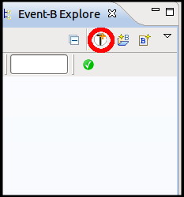
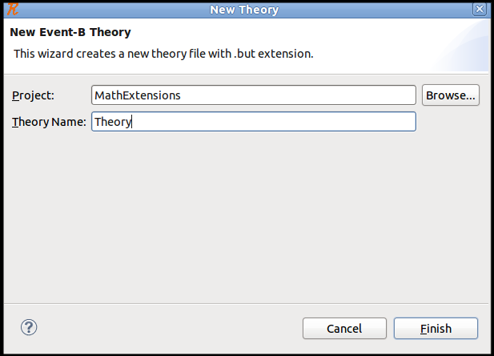
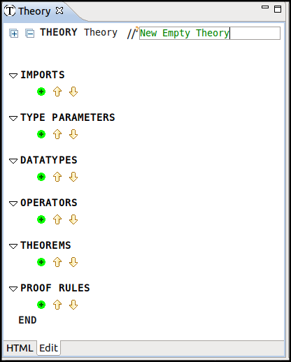

3.2 Create A New Theory
An additional button (red-circled below) should appear in the Event-B Explorer.

By clicking the button , a wizard that enables the creation of a new theory is initiated. Figure 4 shows the wizard in action.

 Note that, as a side effect of pressing the
button, a project called "MathExtensions" is created. This is the project in which global theories reside.
Note that, as a side effect of pressing the
button, a project called "MathExtensions" is created. This is the project in which global theories reside.
In the wizard, specify the parent project of the theory and a theory name. The project can be selected using the button on the right hand side of project name text field (akin to selecting a project when creating a new Event-B component). Click the Finish button to create the theory.
If there are no name clashes between the name of the new theory and any existing resources, you should get a theory editor opened up as depicted in Figure 5.

The theory editor has two pages: an Edit page and an HTML (i.e., pretty print) page. The edit page corresponds to the structured editor. The HTML page is a pretty print view of the theory.